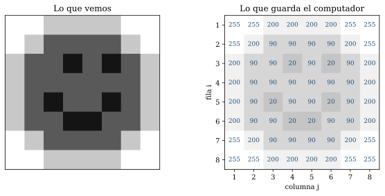
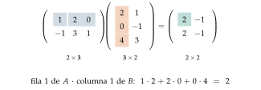
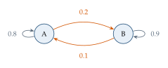
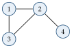

Matrices y álgebra matricial
- reconocer el tamaño, las entradas y los tipos más comunes de matrices;
- sumar matrices, multiplicarlas por escalares y multiplicarlas entre sí;
- escribir un sistema de ecuaciones en la forma compacta \(A\vx=\vb\);
- calcular la transpuesta y la inversa de una matriz;
- usar matrices para modelar ventas, migraciones, economías, códigos secretos y redes.
En el Capítulo 2 usamos las matrices como una forma cómoda de anotar sistemas. Ahora las trataremos como objetos por derecho propio: se pueden sumar, multiplicar e incluso “dividir” (invertir). Una planilla de cálculo, una foto digital o la red de contactos de una red social son, en el fondo, matrices.
4.1 Conceptos
4.1.1 ¿Qué es una matriz?
Una matriz de tamaño \(m\times n\) es un arreglo rectangular de números con \(m\) filas y \(n\) columnas:
El número \(a_{ij}\) es la entrada de la fila \(i\) y la columna \(j\). Primero se dice la fila y después la columna.
Por ejemplo, \(A=\begin{pmatrix}2&0&-1\\3&5&7\end{pmatrix}\) es de \(2\times3\), y \(a_{13}=-1\), \(a_{21}=3\). Una matriz de \(1\times n\) es un vector fila y una de \(m\times1\), un vector columna.

Tipos especiales de matrices
| Tipo | Característica | Ejemplo |
|---|---|---|
| Cuadrada | igual número de filas y columnas | \(\begin{pmatrix}1&2\\3&4\end{pmatrix}\) |
| Cero \(O\) | todas sus entradas son \(0\) | \(\begin{pmatrix}0&0\\0&0\end{pmatrix}\) |
| Identidad \(I_n\) | unos en la diagonal, ceros fuera | \(\begin{pmatrix}1&0&0\\0&1&0\\0&0&1\end{pmatrix}\) |
| Diagonal | ceros fuera de la diagonal | \(\begin{pmatrix}2&0\\0&-5\end{pmatrix}\) |
| Triangular superior | ceros bajo la diagonal | \(\begin{pmatrix}1&4&2\\0&3&-1\\0&0&6\end{pmatrix}\) |
| Simétrica | \(a_{ij}=a_{ji}\) (se “refleja” en la diagonal) | \(\begin{pmatrix}1&7\\7&3\end{pmatrix}\) |
4.1.2 Suma y producto por escalar
Si \(A\) y \(B\) son del mismo tamaño, \(A+B\) se obtiene sumando las entradas que están en la misma posición: \((A+B)_{ij}=a_{ij}+b_{ij}\). Si \(c\) es un escalar, \(cA\) multiplica cada entrada por \(c\): \((cA)_{ij}=c\,a_{ij}\).
Estas operaciones cumplen las mismas reglas que la suma de vectores (Propiedad 3.3): conmutativa, asociativa, neutro \(O\), opuesto \(-A\) y distributivas.
4.1.3 Producto de matrices
El producto de matrices no se hace entrada por entrada. Se define de modo que represente la composición de operaciones, y por eso al principio parece extraño.
Si \(A\) es de \(m\times\mathbf{n}\) y \(B\) es de \(\mathbf{n}\times p\), el producto \(AB\) es la matriz de \(m\times p\) cuya entrada \((i,j)\) es el producto punto de la fila \(i\) de \(A\) con la columna \(j\) de \(B\):
Si el número de columnas de \(A\) no coincide con el número de filas de \(B\), el producto no está definido.

Cuando los productos están definidos:
- \((AB)C=A(BC)\) (asociativa) \(A(B+C)=AB+AC\) y \((A+B)C=AC+BC\) (distributivas);
- \(AI=IA=A\) (la identidad es el neutro);
- en general \(AB\neq BA\): el orden importa.
Las potencias de una matriz cuadrada son \(A^2=AA\), \(A^3=AAA\), etc.
Dos formas de ver el producto matriz por vector
Si \(A\) tiene columnas \(\vect a_1,\dots,\vect a_n\) y \(\vx=(x_1,\dots,x_n)\), entonces
Es decir, \(A\vx\) es una combinación lineal de las columnas de \(A\), con los coeficientes que indica \(\vx\). Por ejemplo, \(\begin{pmatrix}1&2\\3&-1\end{pmatrix}\begin{pmatrix}2\\1\end{pmatrix}=2\begin{pmatrix}1\\3\end{pmatrix}+1\begin{pmatrix}2\\-1\end{pmatrix}=\begin{pmatrix}4\\5\end{pmatrix}\).
4.1.4 Sistemas en forma matricial
El sistema \(\sistema{x+2y+z=9\\2x-y+3z=12\\3x+y-z=1}\) se escribe en una sola línea:
Combinando con lo anterior: el sistema tiene solución si y solo si \(\vb\) es combinación lineal de las columnas de \(A\).
4.1.5 La transpuesta
La transpuesta de una matriz \(A\) de \(m\times n\) es la matriz \(A\T\) de \(n\times m\) cuyas filas son las columnas de \(A\): \((A\T)_{ij}=a_{ji}\).
Propiedades: \((A\T)\T=A\), \((A+B)\T=A\T+B\T\), \((cA)\T=cA\T\) y, ojo con el orden, \((AB)\T=B\T A\T\). Una matriz es simétrica exactamente cuando \(A\T=A\).
4.1.6 La matriz inversa
Para los números, dividir por \(a\) es multiplicar por \(a\inv=\frac1a\), que cumple \(a\cdot a\inv=1\). Con matrices, el papel del \(1\) lo juega la identidad.
Una matriz cuadrada \(A\) de \(n\times n\) es invertible si existe una matriz \(A\inv\) tal que
Si no existe, \(A\) se llama singular. La inversa, cuando existe, es única.
\(A=\begin{pmatrix}a&b\\c&d\end{pmatrix}\) es invertible si y solo si \(ad-bc\neq0\), y entonces
(Se intercambian los de la diagonal, se cambia el signo de los otros dos y se divide por \(ad-bc\).)
El número \(ad-bc\) es el determinante de \(A\); lo estudiaremos en el Capítulo 5. Para matrices más grandes, la inversa se calcula con Gauss-Jordan (ver la receta más abajo).
Si \(A\) es invertible, el sistema \(A\vx=\vb\) tiene solución única, que es \(\vx=A\inv\vb\). Además, \((A\inv)\inv=A\), \((AB)\inv=B\inv A\inv\) y \((A\T)\inv=(A\inv)\T\).
4.1.7 Matrices elementales
Una matriz elemental se obtiene aplicando una operación elemental de fila a la identidad. Multiplicar \(E A\) produce en \(A\) exactamente esa misma operación.
Por ejemplo, \(E=\begin{pmatrix}1&0\\-3&1\end{pmatrix}\) viene de \(F_2-3F_1\to F_2\), y \(E\begin{pmatrix}1&2\\3&4\end{pmatrix}=\begin{pmatrix}1&2\\0&-2\end{pmatrix}\). Así, el método de Gauss es, en el fondo, una sucesión de multiplicaciones por matrices elementales.
Si \(A\) es de \(3\times2\) y \(B\) es de \(2\times4\), ¿qué tamaño tiene \(AB\)? ¿Está definido \(BA\)?
Ver respuesta
4.2 Cómo utilizar los conceptos
- Escribe los tamaños: \((m\times n)(n'\times p)\). Si \(n\neq n'\), el producto no existe.
- El resultado tendrá tamaño \(m\times p\): dibuja el “molde” vacío.
- Para cada casilla \((i,j)\), recorre la fila \(i\) de la primera matriz y la columna \(j\) de la segunda, multiplicando par a par y sumando.
- Revisa una o dos entradas al azar: es donde más se cometen errores aritméticos.
- Escribe la matriz ampliada \((A\,|\,I)\), con la identidad del mismo tamaño a la derecha.
- Aplica operaciones de fila a toda la matriz ampliada hasta transformar la parte izquierda en \(I\).
- Si lo logras, a la derecha aparece \(A\inv\): \((A\,|\,I)\ \to\ (I\,|\,A\inv)\).
- Si en la parte izquierda aparece una fila de ceros, \(A\) no es invertible.
- Comprueba multiplicando \(AA\inv\): debe dar \(I\).
- Calcula \(A\inv\) (si no existe, usa Gauss: el sistema no tiene solución única).
- Multiplica \(\vx=A\inv\vb\) (la inversa va a la izquierda de \(\vb\)).
- Este método es útil cuando hay que resolver muchos sistemas con la misma \(A\) y distintos \(\vb\).
- Multiplicar entrada por entrada: \(\begin{pmatrix}1&2\\3&4\end{pmatrix}\begin{pmatrix}5&6\\7&8\end{pmatrix}\neq\begin{pmatrix}5&12\\21&32\end{pmatrix}\).
- Cambiar el orden: en general \(AB\neq BA\), y por eso \((A+B)^2=A^2+AB+BA+B^2\), que no es \(A^2+2AB+B^2\).
- “Simplificar” \(AB=AC\Rightarrow B=C\): solo es válido si \(A\) es invertible.
- Escribir \(\frac{B}{A}\): no existe la división de matrices; hay que decir si es \(A\inv B\) o \(BA\inv\).
4.3 Ejemplos resueltos
Si \(A=\begin{pmatrix}2&-1\\0&3\end{pmatrix}\) y \(B=\begin{pmatrix}1&4\\-2&5\end{pmatrix}\), calcula \(A+B\), \(3A\) y \(2A-B\).
Solución. \(A+B=\begin{pmatrix}3&3\\-2&8\end{pmatrix}\), \(3A=\begin{pmatrix}6&-3\\0&9\end{pmatrix}\), \(2A-B=\begin{pmatrix}4-1&-2-4\\0+2&6-5\end{pmatrix}=\begin{pmatrix}3&-6\\2&1\end{pmatrix}\).
Calcula \(AB\) y \(BA\) para \(A=\begin{pmatrix}1&2&0\\-1&3&1\end{pmatrix}\) y \(B=\begin{pmatrix}2&1\\0&-1\\4&3\end{pmatrix}\).
Solución. \(AB\) es \((2\times3)(3\times2)=2\times2\):
\(BA\) es \((3\times2)(2\times3)=3\times3\): \(\ BA=\begin{pmatrix}1&7&1\\1&-3&-1\\1&17&3\end{pmatrix}\). ¡Ni siquiera tienen el mismo tamaño!
Con \(A=\begin{pmatrix}1&2\\3&4\end{pmatrix}\) y \(B=\begin{pmatrix}0&1\\1&0\end{pmatrix}\) compara \(AB\) y \(BA\).
Solución. \(AB=\begin{pmatrix}2&1\\4&3\end{pmatrix}\) (intercambia las columnas de \(A\)) y \(BA=\begin{pmatrix}3&4\\1&2\end{pmatrix}\) (intercambia las filas de \(A\)). Son distintas.
Calcula la inversa de \(A=\begin{pmatrix}3&5\\1&2\end{pmatrix}\).
Solución. \(ad-bc=6-5=1\neq0\), así que \(A\inv=\dfrac11\begin{pmatrix}2&-5\\-1&3\end{pmatrix}=\begin{pmatrix}2&-5\\-1&3\end{pmatrix}\). Comprobación: \(\begin{pmatrix}3&5\\1&2\end{pmatrix}\begin{pmatrix}2&-5\\-1&3\end{pmatrix}=\begin{pmatrix}6-5&-15+15\\2-2&-5+6\end{pmatrix}=I\). ✓
Calcula la inversa de \(A=\begin{pmatrix}1&2&3\\0&1&4\\5&6&0\end{pmatrix}\).
Solución.
Por lo tanto, \(A\inv=\begin{pmatrix}-24&18&5\\20&-15&-4\\-5&4&1\end{pmatrix}\). (Verifica que \(AA\inv=I\).)
Resuelve \(\sistema{2x+y=4\\5x+3y=11}\).
Solución. \(A=\begin{pmatrix}2&1\\5&3\end{pmatrix}\), \(ad-bc=1\), \(A\inv=\begin{pmatrix}3&-1\\-5&2\end{pmatrix}\). Entonces \(\vx=A\inv\vb=\begin{pmatrix}3&-1\\-5&2\end{pmatrix}\begin{pmatrix}4\\11\end{pmatrix}=\begin{pmatrix}1\\2\end{pmatrix}\), es decir, \(x=1\), \(y=2\).
4.4 Aplicaciones en la vida real
Una panadería tiene dos locales. La matriz \(Q\) indica las unidades vendidas en un día de pan amasado, empanadas y kuchen; el vector \(\vect p\), el precio de cada producto:
El producto \(Q\vect p=\begin{pmatrix}10\cdot2\,000+5\cdot1\,500+8\cdot3\,000\\6\cdot2\,000+12\cdot1\,500+4\cdot3\,000\end{pmatrix}=\begin{pmatrix}51\,500\\42\,000\end{pmatrix}\) entrega los ingresos de cada local. Las planillas de cálculo hacen exactamente esto con la función de producto de matrices.
Dos compañías de internet, A y B, se reparten un mercado. Cada año, el 80 % de los clientes de A se queda y el 20 % se cambia a B; de los de B, el 90 % se queda y el 10 % se cambia a A. Esto se resume en la matriz de transición
Si hoy las participaciones son \(\vx_0=(0.6,\ 0.4)\), en un año serán \(\vx_1=P\vx_0=(0.52,\ 0.48)\) y en dos años \(\vx_2=P\vx_1=P^2\vx_0=(0.464,\ 0.536)\). A la larga, las participaciones se estabilizan en \((\tfrac13,\ \tfrac23)\), el único vector que cumple \(P\vx=\vx\). (En el Capítulo 10 veremos por qué.)

Wassily Leontief ganó el Premio Nobel de Economía en 1973 por describir la economía de un país con matrices. Supongamos dos sectores, agricultura y energía. Para producir $1 de alimentos se necesitan $0.2 de alimentos y $0.4 de energía; para producir $1 de energía, $0.3 de alimentos y $0.1 de energía. La matriz de consumo es \(C=\begin{pmatrix}0.2&0.3\\0.4&0.1\end{pmatrix}\). Si la demanda externa (hogares, exportaciones) es \(\vect d=(60,90)\) millones, la producción \(\vx\) debe cubrir el consumo interno y la demanda: \(\vx=C\vx+\vect d\), es decir,
Hay que producir 135 millones en alimentos y 160 en energía. Los bancos centrales usan modelos así con decenas de sectores.
Numeramos las letras (\(A=1\), \(B=2\), …) y agrupamos el mensaje en pares. Para cifrar se multiplica cada par por una matriz clave invertible \(K=\begin{pmatrix}3&2\\1&1\end{pmatrix}\). El mensaje HOLA es \((8,15),(12,1)\) y se transforma en
Quien recibe \(54,23,38,13\) y conoce \(K\inv=\begin{pmatrix}1&-2\\-1&3\end{pmatrix}\) recupera el mensaje: \(K\inv(54,23)=(8,15)\), etc. Los sistemas de cifrado modernos son mucho más complejos, pero también usan aritmética de matrices.

En una red de 4 personas, ponemos \(a_{ij}=1\) si \(i\) y \(j\) son amigos y \(0\) si no:
La entrada \((i,j)\) de \(A^2\) cuenta los caminos de largo 2 de \(i\) a \(j\), es decir, los amigos en común. La persona 1 y la 4 tienen un amigo en común (la 2): por eso una red social le sugeriría a 1 conectarse con 4. La diagonal de \(A^2\) da el número de amigos de cada uno.
4.5 Ejercicios de práctica
- 4.1Para \(A=\begin{pmatrix}2&0&-1&4\\3&5&7&-2\end{pmatrix}\), indica su tamaño y las entradas \(a_{13}\), \(a_{24}\) y \(a_{21}\).Ver solución
- 4.2Con \(A=\begin{pmatrix}1&-2\\3&0\end{pmatrix}\) y \(B=\begin{pmatrix}4&1\\-1&2\end{pmatrix}\), calcula \(A+B\), \(2A-3B\) y \(A\T\).Ver solución
- 4.3
Clasifica cada matriz (identidad, diagonal, triangular superior, simétrica; puede ser más de una):
\[P=\begin{pmatrix}1&0\\0&1\end{pmatrix},\quad Q=\begin{pmatrix}3&0\\0&-2\end{pmatrix},\quad R=\begin{pmatrix}1&5\\0&2\end{pmatrix},\quad S=\begin{pmatrix}0&4\\4&1\end{pmatrix}.\]Ver solución - 4.4Calcula \(AB\) y \(BA\) para \(A=\begin{pmatrix}1&2\\0&-1\\3&1\end{pmatrix}\) y \(B=\begin{pmatrix}2&0&1\\1&-1&4\end{pmatrix}\).Ver solución
- 4.5Calcula \(\begin{pmatrix}2&0&-1\\1&3&2\end{pmatrix}\begin{pmatrix}1\\-1\\2\end{pmatrix}\).Ver solución
- 4.6Si \(A\) es \(2\times3\), \(B\) es \(3\times3\), \(C\) es \(3\times1\) y \(D\) es \(1\times2\), ¿cuáles productos están definidos y de qué tamaño son? \(AB\), \(BA\), \(BC\), \(CD\), \(DA\), \(AC\), \(CA\).Ver solución
- 4.7Para \(A=\begin{pmatrix}1&1\\0&1\end{pmatrix}\), calcula \(A^2\) y \(A^3\). ¿Qué crees que vale \(A^n\)?Ver solución
- 4.8Calcula la inversa de \(\begin{pmatrix}4&7\\2&6\end{pmatrix}\). ¿Por qué \(\begin{pmatrix}2&3\\4&6\end{pmatrix}\) no tiene inversa?Ver solución
- 4.9Usa Gauss-Jordan para invertir \(A=\begin{pmatrix}1&0&2\\2&1&3\\0&1&1\end{pmatrix}\).Ver solución
- 4.10Resuelve \(\sistema{x+2y=5\\3x+7y=17}\) usando la matriz inversa.Ver solución
- 4.11Para \(A=\begin{pmatrix}1&2\\3&4\end{pmatrix}\) y \(B=\begin{pmatrix}1&1\\1&0\end{pmatrix}\), calcula \((A+B)^2\) y \(A^2+2AB+B^2\). ¿Son iguales? ¿Por qué?Ver solución
- 4.12Comprueba que \((AB)\T=B\T A\T\) para \(A=\begin{pmatrix}1&2\\3&4\end{pmatrix}\) y \(B=\begin{pmatrix}5&6\\7&8\end{pmatrix}\).Ver solución
- 4.13Escribe el sistema \(\sistema{2x-y+3z=1\\x+4z=0}\) en la forma \(A\vx=\vb\) y como una combinación lineal de las columnas de \(A\).Ver solución
- 4.14Encuentra la matriz \(X\) que cumple \(AX=B\), con \(A=\begin{pmatrix}2&1\\5&3\end{pmatrix}\) y \(B=\begin{pmatrix}1&0\\2&1\end{pmatrix}\).Ver solución
- 4.15
Una cadena de comida rápida vende dos combos en tres sucursales. La matriz \(Q\) da las unidades vendidas y la matriz \(R\) el precio de venta y el costo de cada combo:
\[Q=\begin{pmatrix}20&15\\30&10\\25&25\end{pmatrix}\ \begin{matrix}{\scriptsize\text{suc.\,1}}\\ {\scriptsize\text{suc.\,2}}\\ {\scriptsize\text{suc.\,3}}\end{matrix},\qquad R=\begin{pmatrix}4\,000&2\,500\\3\,500&2\,000\end{pmatrix}\ \begin{matrix}{\scriptsize\text{combo 1}}\\ {\scriptsize\text{combo 2}}\end{matrix}\quad(\text{columnas: venta, costo}).\]Calcula \(QR\), interpreta sus entradas y encuentra la ganancia de cada sucursal.
Ver solución - 4.16En una ciudad, cada año el 90 % de quienes usan transporte público lo sigue usando y el 10 % se pasa al auto; el 30 % de quienes usan auto se pasa al transporte público y el 70 % sigue en auto. Hoy la mitad usa cada medio. Escribe la matriz de transición y calcula la distribución en uno y dos años. Comprueba que \((\tfrac34,\tfrac14)\) no cambia al multiplicarlo por la matriz.Ver solución
- 4.17Con la clave \(K=\begin{pmatrix}2&1\\1&1\end{pmatrix}\) se recibió el mensaje cifrado \(27,\,14,\,45,\,25\) (\(A=1\), \(B=2\), …). Descífralo.Ver solución
- 4.18Una economía tiene dos sectores con matriz de consumo \(C=\begin{pmatrix}0.2&0.4\\0.3&0.1\end{pmatrix}\) y demanda externa \(\vect d=(30,60)\). Encuentra la producción \(\vx\) que satisface \(\vx=C\vx+\vect d\).Ver solución
- 4.19Para la red de la Aplicación 4.5, ¿cuántos amigos en común tienen las personas 2 y 3? ¿Y la 3 y la 4? Usa \(A^2\) y compruébalo en el dibujo.Ver solución
- 4.20Desafío. Demuestra que si \(A\) y \(B\) son invertibles del mismo tamaño, entonces \((AB)\inv=B\inv A\inv\). (Sugerencia: multiplica \(AB\) por \(B\inv A\inv\).)Ver solución
4.6 Solucionario
4.1 Solución del ejercicio 4.1
Tamaño \(2\times4\); \(a_{13}=-1\), \(a_{24}=-2\), \(a_{21}=3\).↑ volver al enunciado4.2 Solución del ejercicio 4.2
\(A+B=\begin{pmatrix}5&-1\\2&2\end{pmatrix}\), \(2A-3B=\begin{pmatrix}-10&-7\\9&-6\end{pmatrix}\), \(A\T=\begin{pmatrix}1&3\\-2&0\end{pmatrix}\).↑ volver al enunciado4.3 Solución del ejercicio 4.3
\(P\): identidad (también diagonal, triangular y simétrica). \(Q\): diagonal (también triangular y simétrica). \(R\): triangular superior. \(S\): simétrica.↑ volver al enunciado4.4 Solución del ejercicio 4.4
\(AB=\begin{pmatrix}4&-2&9\\-1&1&-4\\7&-1&7\end{pmatrix}\) (\(3\times3\)), \(BA=\begin{pmatrix}5&5\\13&7\end{pmatrix}\) (\(2\times2\)).↑ volver al enunciado4.5 Solución del ejercicio 4.5
\((2-0-2,\ 1-3+4)=(0,\ 2)\).↑ volver al enunciado4.6 Solución del ejercicio 4.6
\(AB\): \(2\times3\). \(BA\): no. \(BC\): \(3\times1\). \(CD\): \(3\times2\). \(DA\): \(1\times3\). \(AC\): \(2\times1\). \(CA\): no.↑ volver al enunciado4.7 Solución del ejercicio 4.7
\(A^2=\begin{pmatrix}1&2\\0&1\end{pmatrix}\), \(A^3=\begin{pmatrix}1&3\\0&1\end{pmatrix}\); en general \(A^n=\begin{pmatrix}1&n\\0&1\end{pmatrix}\).↑ volver al enunciado4.8 Solución del ejercicio 4.8
\(ad-bc=24-14=10\): inversa \(\frac1{10}\begin{pmatrix}6&-7\\-2&4\end{pmatrix}=\begin{pmatrix}0.6&-0.7\\-0.2&0.4\end{pmatrix}\). La otra tiene \(ad-bc=12-12=0\) (su segunda fila es el doble de la primera).↑ volver al enunciado4.9 Solución del ejercicio 4.9
\(F_2-2F_1\); \(F_3-F_2\); \(\tfrac12F_3\); \(F_2+F_3\) y \(F_1-2F_3\) dan \(A\inv=\begin{pmatrix}-1&1&-1\\-1&\frac12&\frac12\\1&-\frac12&\frac12\end{pmatrix}\).↑ volver al enunciado4.10 Solución del ejercicio 4.10
\(A\inv=\begin{pmatrix}7&-2\\-3&1\end{pmatrix}\) (pues \(ad-bc=1\)); \(\vx=A\inv(5,17)=(35-34,\ -15+17)=(1,2)\).↑ volver al enunciado4.11 Solución del ejercicio 4.11
\((A+B)^2=\begin{pmatrix}16&18\\24&28\end{pmatrix}\) y \(A^2+2AB+B^2=\begin{pmatrix}15&13\\30&29\end{pmatrix}\). No son iguales porque \(AB\neq BA\): lo correcto es \((A+B)^2=A^2+AB+BA+B^2\).↑ volver al enunciado4.12 Solución del ejercicio 4.12
\(AB=\begin{pmatrix}19&22\\43&50\end{pmatrix}\), así que \((AB)\T=\begin{pmatrix}19&43\\22&50\end{pmatrix}\), y \(B\T A\T=\begin{pmatrix}5&7\\6&8\end{pmatrix}\begin{pmatrix}1&3\\2&4\end{pmatrix}=\begin{pmatrix}19&43\\22&50\end{pmatrix}\). ✓↑ volver al enunciado4.13 Solución del ejercicio 4.13
\(\begin{pmatrix}2&-1&3\\1&0&4\end{pmatrix}\begin{pmatrix}x\\y\\z\end{pmatrix}=\begin{pmatrix}1\\0\end{pmatrix}\), y \(x\begin{pmatrix}2\\1\end{pmatrix}+y\begin{pmatrix}-1\\0\end{pmatrix}+z\begin{pmatrix}3\\4\end{pmatrix}=\begin{pmatrix}1\\0\end{pmatrix}\).↑ volver al enunciado4.14 Solución del ejercicio 4.14
\(X=A\inv B=\begin{pmatrix}3&-1\\-5&2\end{pmatrix}\begin{pmatrix}1&0\\2&1\end{pmatrix}=\begin{pmatrix}1&-1\\-1&2\end{pmatrix}\).↑ volver al enunciado4.15 Solución del ejercicio 4.15
\(QR=\begin{pmatrix}132\,500&80\,000\\155\,000&95\,000\\187\,500&112\,500\end{pmatrix}\): la primera columna es el ingreso y la segunda el costo de cada sucursal. Ganancias: $52 500, $60 000 y $75 000.↑ volver al enunciado4.16 Solución del ejercicio 4.16
\(P=\begin{pmatrix}0.9&0.3\\0.1&0.7\end{pmatrix}\) (columnas: desde transporte público, desde auto). \(\vx_1=P(0.5,0.5)=(0.6,\ 0.4)\); \(\vx_2=P\vx_1=(0.66,\ 0.34)\). Además \(P(0.75,\ 0.25)=(0.675+0.075,\ 0.075+0.175)=(0.75,\ 0.25)\). ✓↑ volver al enunciado4.17 Solución del ejercicio 4.17
\(K\inv=\begin{pmatrix}1&-1\\-1&2\end{pmatrix}\). \(K\inv(27,14)=(13,1)\) y \(K\inv(45,25)=(20,5)\): las letras \(13,1,20,5\) forman la palabra MATE.↑ volver al enunciado4.18 Solución del ejercicio 4.18
\(I-C=\begin{pmatrix}0.8&-0.4\\-0.3&0.9\end{pmatrix}\), \((I-C)\inv=\begin{pmatrix}1.5&\frac23\\0.5&\frac43\end{pmatrix}\). Entonces \(\vx=(I-C)\inv\vect d=(45+40,\ 15+80)=(85,\ 95)\).↑ volver al enunciado4.19 Solución del ejercicio 4.19
En \(A^2\), la entrada \((2,3)\) es \(1\): un amigo en común (la persona 1). La entrada \((3,4)\) es \(1\): un amigo en común (la persona 2).↑ volver al enunciado4.20 Solución del ejercicio 4.20
Basta multiplicar:
\[(AB)(B\inv A\inv)=A(BB\inv)A\inv=AIA\inv=AA\inv=I,\]y de igual modo \((B\inv A\inv)(AB)=I\). Como la inversa es única, \((AB)\inv=B\inv A\inv\).
↑ volver al enunciado
¿Terminaste de estudiar este capítulo?